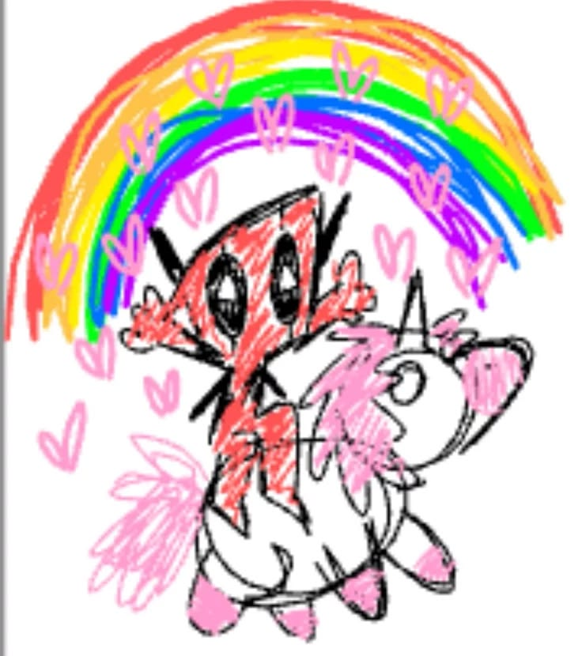

PERSONAS QUE NECESITAN SUPERVISIÓN ADULTA
- 01
Wade Wilson
No se le puede dejar solo ni cinco minutos.
- 02
Rayden Wilson
Tiene sus momentos, seguro que herencia familiar.
- 03
Si ves a estos dos juntos, CORRE
No se le puede dejar solo ni cinco minutos.
Tiene sus momentos, seguro que herencia familiar.
